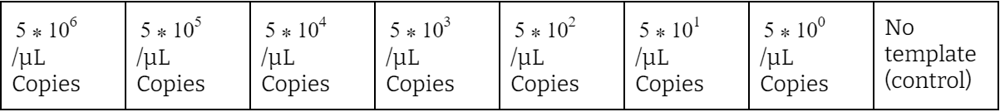
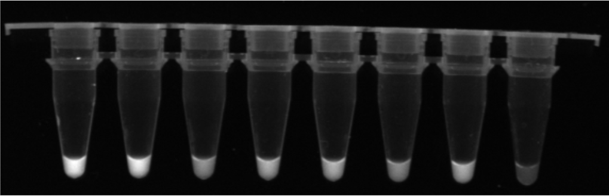
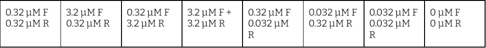
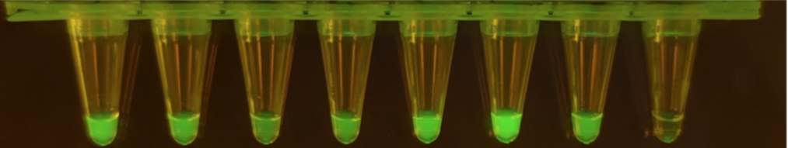
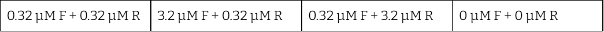
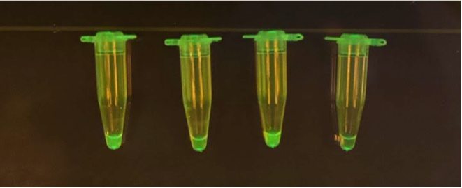
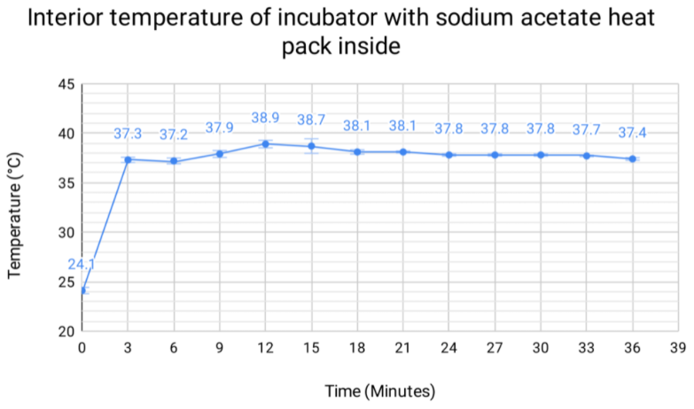
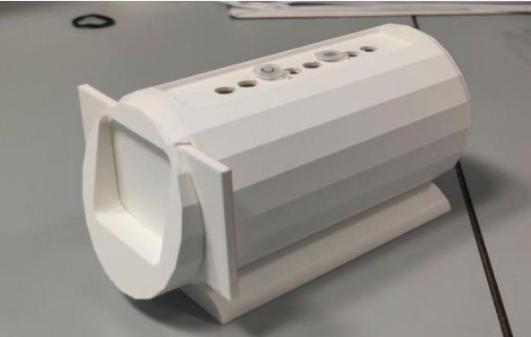
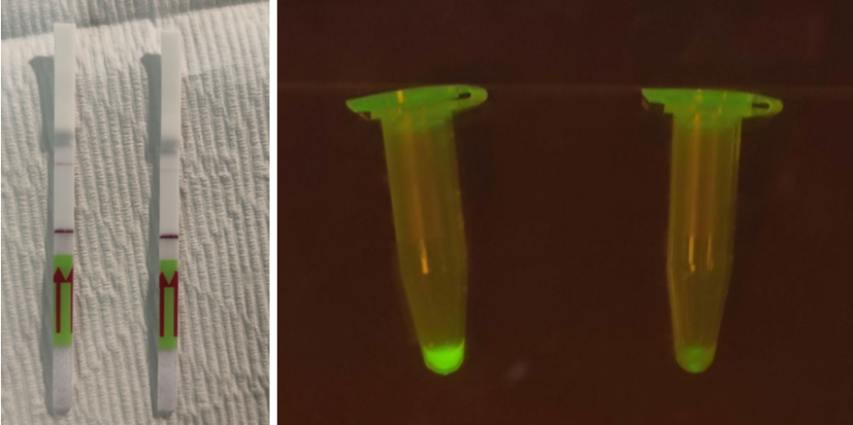

Proof of Concept
We determined the viability of our product in-field in multiple ways. Our detection system has uses in wet markets, restaurants, hotels, and other levels of the oyster production chain. Because of the large range of possible applications, we had to ensure that our detection system would function in different settings, environments, and contamination levels. In addition to the technical side of our proof of concept, we also conducted several interviews with several potential consumers throughout the course of our project. Additionally, we developed a portable incubator to ensure the functionality of our detection system in varying environmental temperatures. Overall, our holistic approach to developing a solid detection system gave us a functional solution that not only works in a lab but in its real-world context.
Social Engagement - Target Consumers
Throughout our project, we conducted several interviews with potential consumers, ranging from wet-market stall owners to restaurants to large-scale corporations. We conducted these interviews and surveys to gauge consumer interest in our product. This was another method we used to evaluate the viability of our product. The feedback we received on the practical applicability of our kit was very positive, as many wet market stall owners cited that our kit would see use provided that it was as affordable and cheap as we projected. They appreciated the intuitive and easy-to-use concept our kit possesses.
We also interviewed many restaurant managers who further confirmed that our kit could be used in restaurants, specifically for screening batches of seafood. Many of the people we interviewed were also quick to understand that even though our kit is designed to detect oyster bacteria, it could also be applied to other kinds of seafood, which is what made our kit appealing to seafood restaurants that import a variety of seafood.
Our interviews helped us refine a realistic implementation of our product, as they confirmed potential consumers of Vib-Check and confirmed that the potential consumers require our product. Overall, this helped expand our idea outside the limits of the lab and into the real-world market.
Wetlab - Kit Development
Limits of Detection
To demonstrate that our kit is suitable for real-world situations, we must test its accuracy and reliability to the extremes. We decided to test the limits of our detection system by evaluating the amounts of templates that our system could detect. This experiment would entail adjusting concentrations of template DNA in the context of a full experiment, involving all parts of our kit, instead of isolating RPA or the Cas12a reaction. To run this experiment, we prepared our RPA mix and our Cas mix normally and essentially ran through our detection system. We then prepared eight tubes of the mix. In each tube, we scaled down the amount of template tenfold, with the eighth tube being a control trial that held no template. We calculated the number of templates by the number of copies per microliter.
We incubated the reaction for thirty minutes and recorded photos at 0, 5, 10, 20, and 30 minutes. The interval periods allowed us to gauge the level of brightness at different intervals. From our results, we were able to visualize the number of templates that our system could detect.
Altogether, this experiment helped us to determine the sensitivity of our kit. It further showed its potential use in a field situation, where the amount of Vibrio in a contaminated sample could vary. This experiment proved that Vib-Check had a vast scope of detection and is incredibly reliable for real-world application and use, as consumers would undoubtedly want to be aware of even the most minute quantities of Vibrio contamination in their oysters.

Asymmetric Primers
One way we attempted to increase the sophistication of our experiment was through the use of an asymmetric ratio of primers. This experiment helped reduce the production costs for our kit. This cost reduction aligned with our goals of developing an affordable kit, which was a major factor we considered when designing our product. In this experiment, we attempted to increase the yield of ssDNA without increasing the use of the Cas12a enzyme. We aimed to reduce the cost of our detection kit. Rather than brute-force results in a crude method of overloading with reagents, we wanted to use asymmetric primers to increase our ssDNA yield. To do this, we tested different ratios of forward and reverse primers to find the best ratio of asymmetry.
The first set of results below are from our first attempt at this experiment. We found that the 0.32F and 0.032R tubes had the best result, and generally, the lower concentration of forward and reverse primers had a better result than the higher concentrations. However, tube 3 had quite a strange result, so we wanted to retest our protocol. We concluded that the longer RPA duration with higher primer concentration led to more duplex strands and completed RPA; this isn’t beneficial for our project, as the goal is to maximize single strand template DNA for our gRNA due to the fact our gRNA is designed without considering PAM. Therefore, when we reran the experiment (results seen in the second photo), we incorporated shorter RPA incubation duration with universally higher primer concentrations to balance out duplex formation rate, which would hopefully be as low as the first experiment. With these changes, we got much brighter results that reflected the results seen in the first experiment.
First experiment results:

Second experiment results:

Hardware - Sodium Acetate Incubator
As one of our contributions, we developed and 3D-printed a sodium acetate-based incubator. This incubator is portable, relatively small in size, and is an excellent insulator. Not only that, our heat block is entirely reusable and environmentally friendly. Due to our system's wide range of potential applications, we wanted to develop an incubating system that would insulate at our target reaction temperature for an extended period.
When developing our incubator, we had not only to consider insulation but also ease of use. The principle of ease of use is why activation of our incubator only requires a click of a trigger and a small slide to close. The focus of being a decent insulator is why the central chamber of our incubator possesses relatively thick walls.
The heating portion of the incubator is a heat pack filled with sodium acetate solution and thus requires no electricity or external energy sources. The heat reaction is started by snapping a button inside the gel package and is entirely reusable. Once the reaction begins, a user has to place it inside the incubator and close the lid. With spaces for several tubes, this incubator can be used to run several tests at once. Considering our target audience could include stall owners at Hong Kong’s wet markets, where the temperature largely fluctuates in the outdoor environment, or a restaurant that maintains cooler indoor temperatures, we developed this system to take up very little space and maintain stable temperatures.
The graph demonstrates that our kit can maintain a stable temperature within the 37 to 39*C temperature range for a whole 33 minutes, more than enough for reaction. This demonstrates that the incubator can sustain the optimal temperature range for the entire duration of the RPA and CRISPR Cas12a reaction duration, which proves that our incubator functions as intended.
Wetlab - Kit Realistic Implementation - Detection with Vibrio Genome
After running our experiments with a DNA template designed to complement our guide RNA, we decided to put everything together in a final proof of concept experiment with real Vibrio bacterial DNA. In this experiment, we ran a thorough experiment using all individual components of our kit, including the incubator.
We performed the experiment with real Vibrio and a control species of bacteria unrelated to Vibrio and ran through the procedures we designed for our kit to be used. The real Vibrio bacteria were isolated with extreme care by our mentor Kenneth Ng, an HKU iGEM team member. The experiments performed were under intense scrutiny and supervision to ensure we took proper safety precautions so that there would be no risk of skin or lab contamination.

This image shows eight agarose plates covered with green colonies of Vibrio. Due to all documentation depicting most species of Vibrio possessing characteristic green coloration in plated colonies, we knew immediately that our isolated colonies were Vibrio. However, we ran several gels to make sure that the colonies we isolated were Vibrio. The colony used as the positive control in our experiment came from one of these plates.
When running our experiment, we used our dipstick-lysis buffer solution system to purify bacterial genomic DNA, and we used our 3D-printed sodium acetate incubator to incubate the RPA and Cas12a reaction. We decided to incubate the reaction in our incubator, rather than using lab machinery, to mimic the actual conditions of kit use. This experiment was an excellent way to demonstrate the application of the kit in the field scenarios without access to lab machinery.

The final result demonstrated distinct positive and negative results for our positive and negative control experiments. Our positive control contained Vibrio bacteria, and our negative control contained non-Vibrio bacteria. The figure on the left demonstrates the correct results on a Lateral Flow Assay, which is what we expect our results to look like in a consumers' hands. The positive and negative results on the lateral flow assays are both very distinct, which is an excellent illustration of the functionality and ease of interpretation of the results displayed by our kit. The fluorescence-based visualization of the result (the right image with the control in the right tube) is further proof that our kit can detect the presence of real Vibrio bacteria in a sample solution or mixture.
Sources
1. “Final Diagnosis -- A 77 Year-Old Male Infected with Vibrio Vulnificus and Campylobacter Jejuni.” Final Diagnosis -- Case 583, path.upmc.edu/cases/case583/dx.html#:~:text=vulnificus produce a blue-green,are classified with the fermenters.